Crankshaft: Service and Repair
11 21 500 - Replacing crankshaft (N52K)

Special tools required:
- 00 2 510 00 2 510 Dial Gauge with Feeler
- 00 9 120 00 9 120 Torque Angle Measuring Dial
- 11 4 370 11 4 370 Device
- 11 4 440 11 4 440 Engine Support Plate
- 11 4 470 11 4 470 Tool
- 11 9 360 11 9 360 Mandrel

Important!
Aluminium-magnesium materials.
No steel screws/bolts may be used due to the threat of electrochemical corrosion.
A magnesium crankcase requires aluminium screws/bolts exclusively.
Aluminium screws/bolts must be replaced each time they are released.
Aluminium screws/bolts are permitted with and without
colour coding (blue).
For reliable identification:
Aluminium screws/bolts are not magnetic.
Jointing torque and angle of rotation must be observed without fail (risk of damage).

Necessary preliminary tasks:
- Remove engine Removing and Installing Engine
- Mount engine on assembly stand 11 00 ... Mounting Engine on Assembly Stand
- Remove vibration damper Service and Repair
- Remove oil sump Service and Repair
- Remove oil pump 11 41 000 Removing and Installing/Replacing Oil Pump
- Remove oil pump/vacuum pump chain module 11 41 010 Removing and Installing/Replacing Chain Module For Oil Pump/Vacuum Pump
- Remove timing chain module Service and Repair
- Remove cylinder head Removal and Replacement
- Remove flywheel
- Removing all pistons Service and Repair
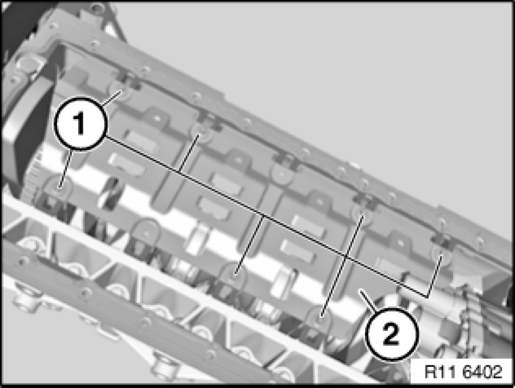
Release screws (1).
Tightening torque 11 13 6AZ [1][2]11 13 Oil Sump.
Installation Note:
Replace aluminium screws.
Remove oil deflector (2).
Note:
Graphic shows the screw connection of the oil deflector (2) for vehicles with optional extra SA203 (all-wheel drive).
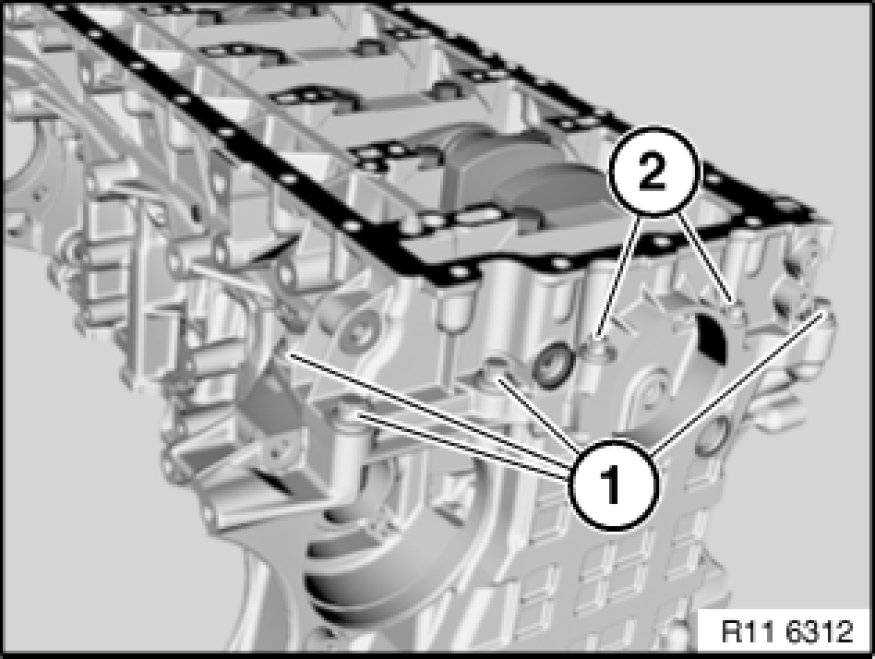
Release screws (1).
Tightening torque 11 11 2AZ. Mechanical Specifications
Unfasten screws (2).
Tightening torque 11 11 3AZ. Mechanical Specifications
Installation Note:
Replace aluminium screws.
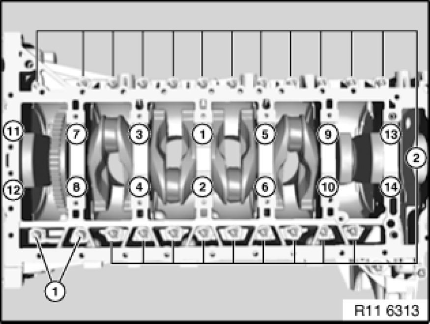
Release screws (1).
Tightening torque 11 11 4AZ. Mechanical Specifications
Unfasten screws (2).
Tightening torque 11 11 2AZ. Mechanical Specifications
Installation Note:
Replace aluminium screws.
Release steel screws (1 to 14) from outside inwards.
Tightening torque 11 11 1AZ. Mechanical Specifications
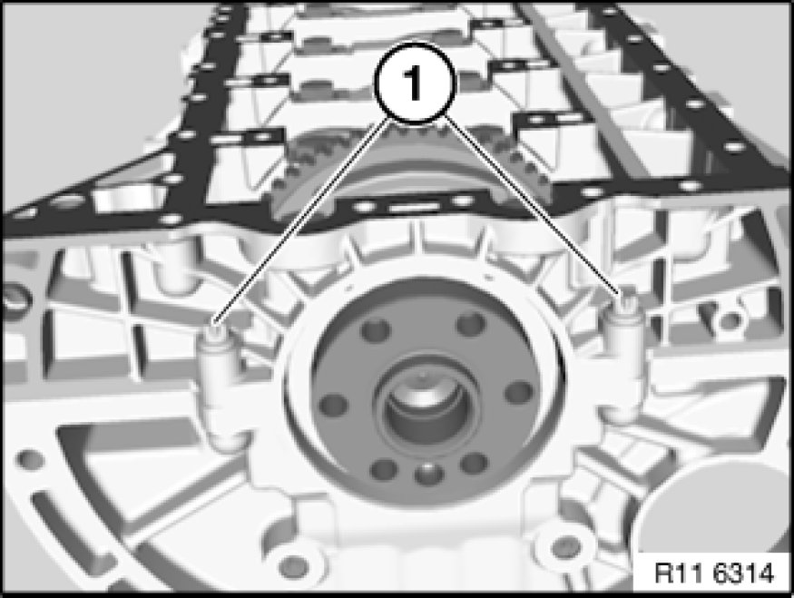
Release screws (1).
Tightening torque 11 11 3AZ. Mechanical Specifications
Installation Note:
Replace aluminium screws.
Lift out bedplate.
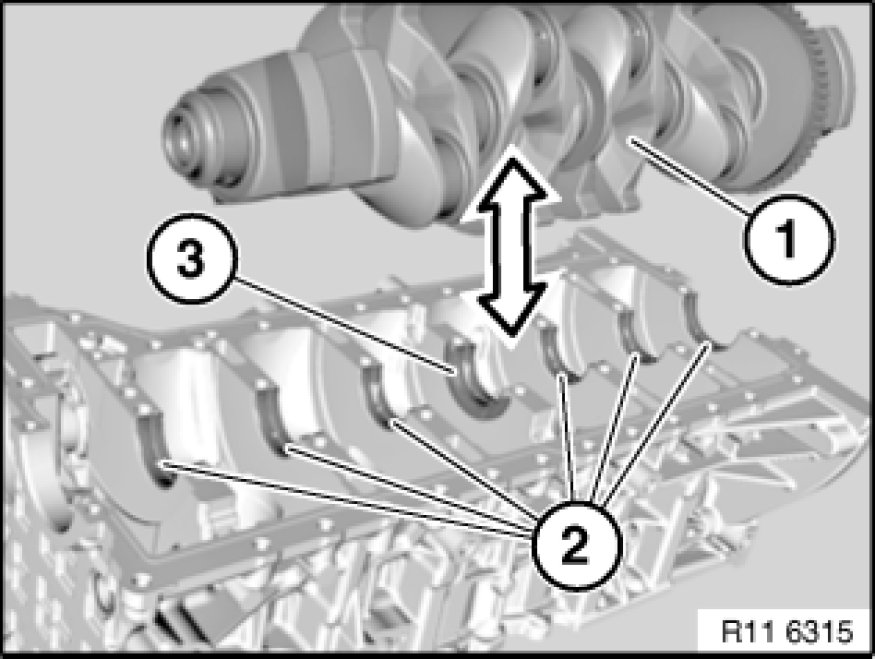
Remove crankshaft (1) in direction of arrow.
Important!
Remove crankshaft with aid of a second person.
Weight of crankshaft approx. 25 kg.
Remove bearing shells Service and Repair(2) and guide bearing shell (3), replace if necessary.
Clean all sealing faces with special tool 11 4 470.
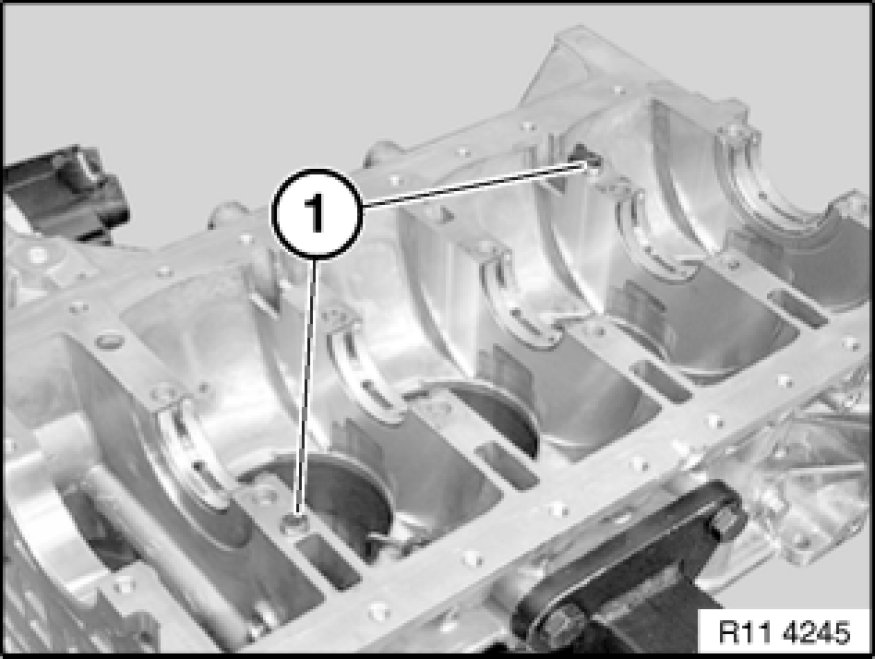
Check adapter sleeves (1) for damage and secure seating; replace if necessary.
Install all bearing shells Service and Repair.
Installation Note:
Lubricate all bearing points with engine oil.
Note:
Graphic shows N46.
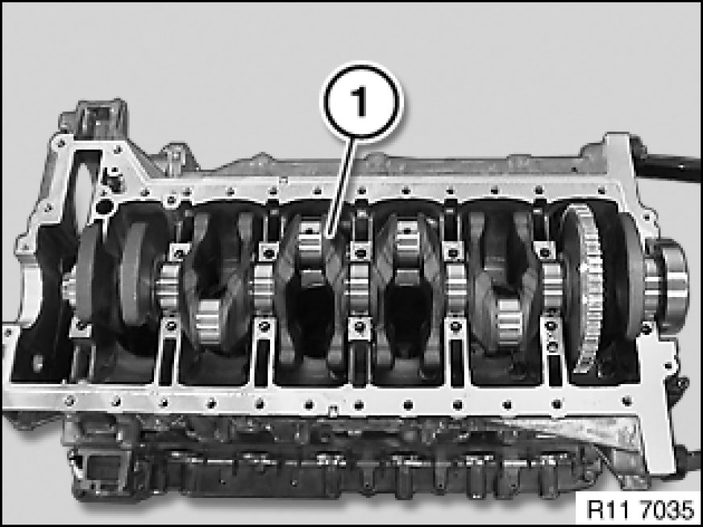
Insert crankshaft (1).
Important!
Install crankshaft with aid of a second person.
Weight of crankshaft approx. 25 kg.
Tighten steel screws (1 to 14) from inside outwards.
Tightening torque 11 11 1AZ. Mechanical Specifications
Tighten screws (2) from inside outwards.
Tightening torque 11 11 2AZ. Mechanical Specifications
Tighten screws (1).
Tightening torque 11 11 4AZ. Mechanical Specifications
Installation Note:
Replace aluminium screws.
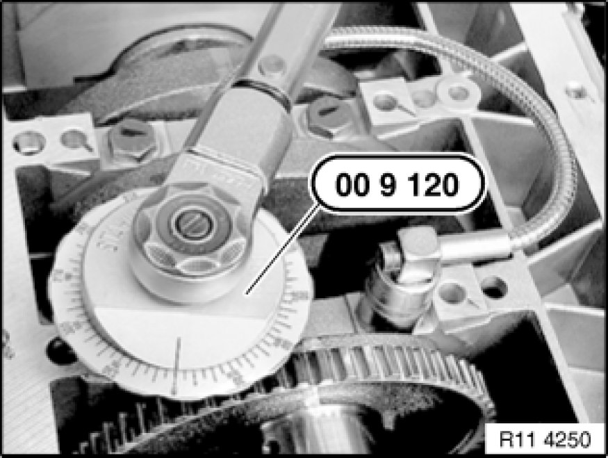
Tighten aluminium screws exclusively with special tool 00 9 120.
Important!
In the case of aluminium screws, jointing torque and angle of rotation must be observed without fail.
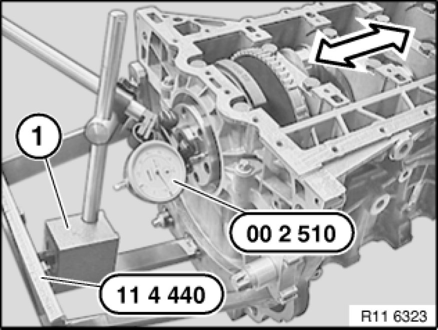
Set up stand with magnetic foot (1) on special tool 11 4 440.
Set up special tool 00 2 510 00 2 510 Dial Gauge with Feeler on stand.
Position special tool 00 2 510 00 2 510 Dial Gauge with Feeler on crankshaft.
Move crankshaft in direction of arrow.
Determine bearing play.
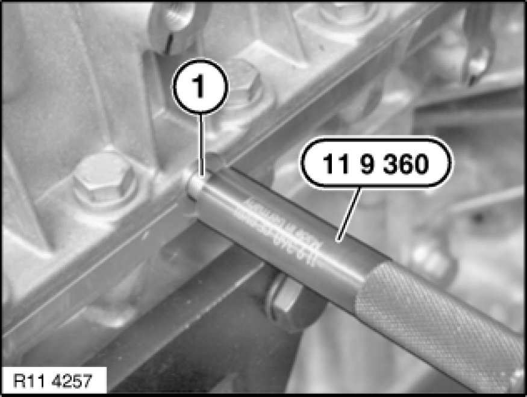
Drive in both nozzles (1) with special tool 11 9 360 on left and right into crankcase.
Installation Note:
Always replace nozzles (1).

Replace crankshaft radial seal Service and Repair at front.
Replace crankshaft radial seal 11 14 151 Replacing Crankshaft Radial Seal (Transmission Side) (transmission side).
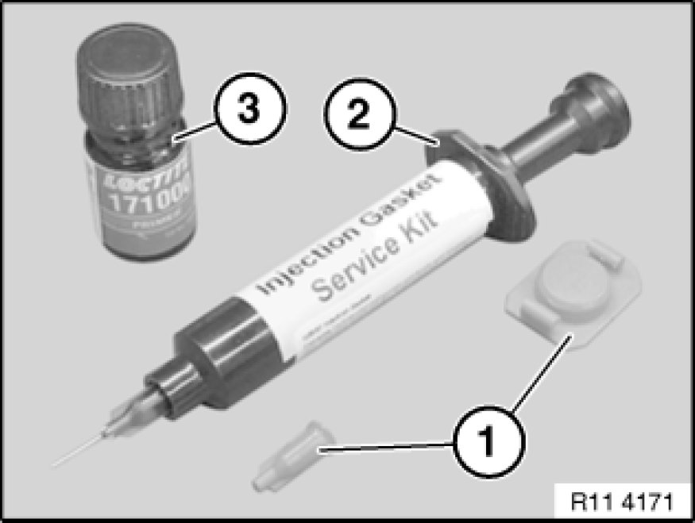
Installation Note:
Use primer 1.3 and liquid gasket 1.4 Procedures.
Prepare liquid gasket (1) in special tool 11 4 370.
Screw on nozzle for injecting liquid gasket.
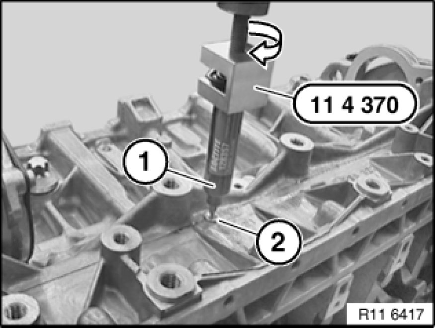
Slowly insert liquid gasket (1) with special tool 11 4 370 in direction of arrow.
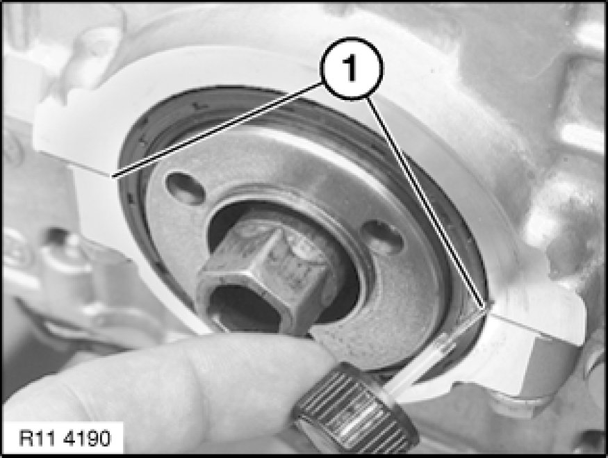
Stop (seal off) escaping liquid gasket with primer 1.3.
(Picture shows N40).
Assemble engine.